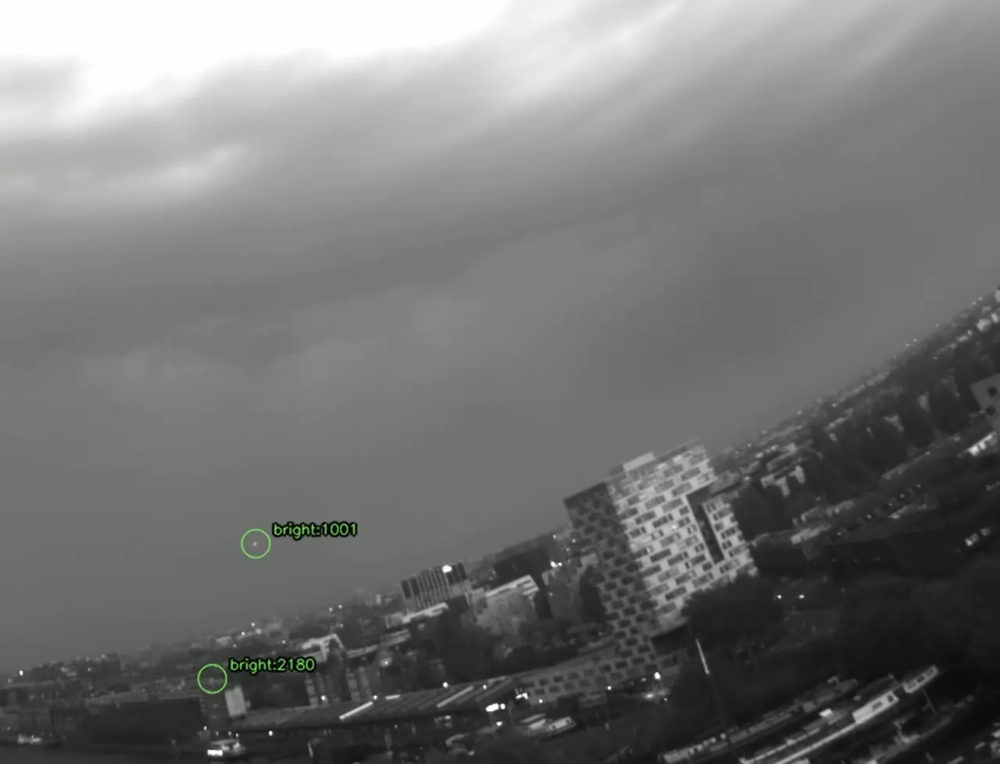
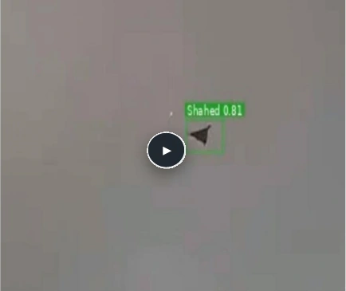

The platform
Hardware. Software.
One observation workflow.
A modular approach to aerial awareness for infrastructure operators, defense teams, and system integrators.
 Hardware / in development
Hardware / in developmentHardware
Build the observation layer.
Our field hardware and modular sensing concepts connect cameras, supporting inputs, and edge compute. Each configuration begins with target size, scene conditions, mounting, and the information the operator needs.
Start with the scene.
Evaluate target size, clutter, illumination, and camera movement in representative data.
Define useful output.
Agree on the information a person or integrated system needs to review.
Assess the result.
Keep performance criteria and development status explicit.

Software / recorded exampleSoftware
Turn recordings into reviewable evidence.
Recording, model inference, motion compensation, and temporal association form the perception workflow. Interfaces, data retention, and any operator handoff are scoped for the system being evaluated.
Start with the scene.
Evaluate target size, clutter, illumination, and camera movement in representative data.
Define useful output.
Agree on the information a person or integrated system needs to review.
Assess the result.
Keep performance criteria and development status explicit.

AI models / recorded exampleAI models
Recognize detail. Follow small signals.
Object-classification examples and small-point tracking address different image conditions. A model label is a prediction; a point track provides temporal evidence without necessarily identifying the object.
Start with the scene.
Evaluate target size, clutter, illumination, and camera movement in representative data.
Define useful output.
Agree on the information a person or integrated system needs to review.
Assess the result.
Keep performance criteria and development status explicit.
Integration roadmap
Independent observations.
A shared picture.
The deck’s architecture combines visual and infrared sensing, acoustic cueing, supporting navigation data, and a network of edge-processing nodes.
Distributed fusion, passive-radar integration, and cross-node localization are development directions. Site trials establish what the combined system can deliver.
*Integration roadmap; evaluated for each application.
Start with your site
Define what the system needs to prove.
Start with the site, the objects of interest, and a representative evaluation.